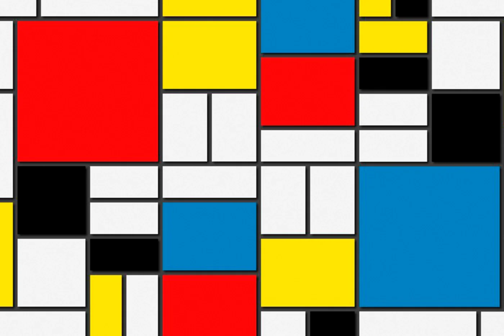

La obra de “Piet Mondrian” es conocida por su uso de líneas rectas y colores puros,
el artista holandés fue defensor de abstracción y una de las figuras mas influyentes del siglo XX
“Senecio” es una pintura de artista suizo Klee realizada en1922. Se trata de un arte abstracto de un hombre
con la cabeza redonda y el cuello largo y estrecho, la obra se encuentra en el museo de Arte de Basilea
“Composicion 8” es una pintura abstracta del artista ruso Wassily Kandinsky, realizada en 1923.
Esta obra se encuentra en el museo Solomon R. Guggenheim de New York